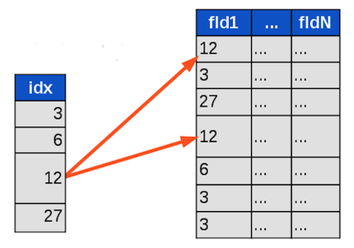

Introduction to Algorithms:
Computational Complexity
by Vasyl Nakvasiuk, 2013
What is an algorithm?
What is an Algorithm?
An algorithm is a procedure that takes any of the possible input instances and transforms it to the desired output.
Important issues: correctness, elegance and efficiency.
Efficiency
Is this really necessary?
Criteria of efficiency:
- Time complexity
- Space complexity
Time complexity ≠ Space complexity ≠ Complexity of algorithm
How can we measure complexity?
How can we measure complexity?
Empirical Analysis (Benchmarks)
Theoretical Analysis (Asymptotic analysis)
Benchmarks
Empirical Analysis
Benchmarks
Version #1
What means “fast”?
Benchmarks
Version #2
import time
start = time.time() # Return the time in seconds since the epoch.
my_algo(some_input)
end = time.time()
print(end - start)
0.048032498359680176
Benchmarks
Version #3
import timeit
timeit.timeit('my_algo(some_input)', number=1000)
1000 loops, best of 3: 50.3 ms per loop
Benchmarks
Version #4
import timeit
inputs = [1000, 10000, 500000, 1000000]
for input in inputs:
timeit.timeit('my_algo(input)', number=1000)
list of 1000 items:
1000 loops, best of 3: 50.3 ms per loop
list of 10000 items:
1000 loops, best of 3: 104.7 ms per loop
list of 500000 items:
1000 loops, best of 3: 459.1 ms per loop
list of 1000000 items:
1000 loops, best of 3: 3.12 s per loop
Benchmarks
Version #5
# Intel Core i7-3970X @ 3.50GHz, RAM 8 Gb, Ubuntu 12.10 x64, Python 3.3.0
import timeit
inputs = [1000, 10000, 500000, 1000000]
for input in inputs:
timeit.timeit('my_algo(input)', number=1000)
list of 1000 items:
1000 loops, best of 3: 50.3 ms per loop
list of 10000 items:
1000 loops, best of 3: 104.7 ms per loop
list of 500000 items:
1000 loops, best of 3: 459.1 ms per loop
list of 1000000 items:
1000 loops, best of 3: 3.12 s per loop
Experimental studies have several limitations:
- It is necessary to implement and test the algorithm in order to determine its running time.
- Experiments can be done only on a limited set of inputs, and may not be indicative of the running time on other inputs not included in the experiment.
- In order to compare two algorithms, the same hardware and software environments should be used.
Asymptotic analysis
Theoretical Analysis
Asymptotic analysis
Efficiency as a function of input size
T(n) – running time as a function of n, where n – size of input.
n → ∞
Random-Access Machine (RAM)
Best, worst, and average-case complexity
Linear search
def linear_search(my_item, items):
for position, item in enumerate(items):
if my_item == item:
return position
T(n) = n ?
T(n) = 1/2 ⋅ n ?
T(n) = 1 ?
Best, worst, and average-case complexity
Best, worst, and average-case complexity
Linear search
def linear_search(my_item, items):
for position, item in enumerate(items):
if my_item == item:
return position
Worst case: T(n) = n
Average case: T(n) = 1/2 ⋅ n
Best case: T(n) = 1
T(n) = O(n)
How can we compare two functions?
We can use Asymptotic notation
Asymptotic notation
The Big Oh Notation
Asymptotic upper bound
O(g(n)) = {f(n): there exist positive constants c and n0 such that 0 ≤ f(n) ≤ c⋅g(n) for all n ≥ n0}
T(n) ∈ O(g(n))
or
T(n) = O(g(n))
Ω-Notation
Asymptotic lower bound
Ω(g(n)) = {f(n): there exist positive constants c and n0 such that 0 ≤ c⋅g(n) ≤ f(n) for all n ≥ n0}
T(n) ∈ Ω(g(n))
or
T(n) = Ω(g(n))
Θ-Notation
Asymptotic tight bound
Θ(g(n)) = {f(n): there exist positive constants c1, c2 and n0 such that 0 ≤ c1⋅g(n) ≤ f(n) ≤ c2⋅g(n) for all n ≥ n0}
T(n) ∈ Θ(g(n))
or
T(n) = Θ(g(n))
Graphic examples of the Θ, O and Ω notations
Examples
3⋅n2 - 100⋅n + 6 = O(n2),
because we can choose c = 3 and
3⋅n2 > 3⋅n2 - 100⋅n + 6
100⋅n2 - 70⋅n - 1 = O(n2),
because we can choose c = 100 and
100⋅n2 > 100⋅n2 - 70⋅n - 1
3⋅n2 - 100⋅n + 6 ≈ 100⋅n2 - 70⋅n - 1
Linear search
Linear search (Villarriba version):
T(n) = O(n)
Linear search (Villabajo version)
def linear_search(my_item, items):
for position, item in enumerate(items):
print('poition – {0}, item – {0}'.format(position, item))
print('Compare two items.')
if my_item == item:
print('Yeah!!!')
print('The end!')
return position
T(n) = O(3⋅n + 2) = O(n)
Speed of "Villarriba version" ≈ Speed of "Villabajo version"
Binary search
def binary_search(seq, t):
min = 0; max = len(seq) - 1
while 1:
if max < min:
return -1
m = (min + max) / 2
if seq[m] < t:
min = m + 1
elif seq[m] > t:
max = m - 1
else:
return m
T(n) = O(log(n))
Practical usage
Add DB “index”

Types of Order
However, all you really need to understand is that:
n! ≫ 2⋅n ≫ n3 ≫ n2 ≫ n⋅log(n) ≫ n ≫ log(n) ≫ 1
The Big Oh complexity for different functions

Growth rates of common functions measured in nanoseconds
Each operation takes one nanosecond (10-9 seconds).
How can you quickly find out complexity?
O(?)
On the basis of the issues discussed here, I propose that members of SIGACT, and editors of computer science and mathematics journals, adopt the O, Ω and Θ notations as defined above, unless a better alternative can be found reasonably soon.
D. E. Knuth, "Big Omicron and Big Omega and BIg Theta", SIGACT News, 1976.
Benchmarks
or
Asymptotic analysis?
Use both approaches!
Summary
- We want to predict running time of an algorithm.
- Summarize all possible inputs with a single “size” parameter n.
- Many problems with “empirical” approach (measure lots of test cases with various n and then extrapolate).
- Prefer “analytical” approach.
- To select best algorithm, compare their T(n) functions.
- To simplify this comparision “round” the function using asymptotic (“big-O”) notation
- Amazing fact: Even though asymptotic complexity analysis makes many simplifying assumptions, it is remarkably useful in practice: if A is O(n3) and B is O(n2) then B really will be faster than A, no matter how they’re implemented.
Links
Books:
- "Introduction To Algorithms, Third Edition", 2009, by Thomas H. Cormen, Charles E. Leiserson, Ronald L. Rivest and Clifford Stein
- "The Algorithm Design Manual, Second Edition", 2008, by Steven S. Skiena
Other:
- "Algorithms: Design and Analysis" by Tim Roughgarden
https://www.coursera.org/course/algo - Big-O Algorithm Complexity Cheat Sheet
http://bigocheatsheet.com/
The end
Thank you for attention!
- Vasyl Nakvasiuk
- Email: vaxxxa@gmail.com
- Twitter: @vaxXxa
- Github: vaxXxa